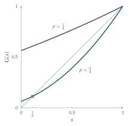

STEP II 2003、第12問
先に進む前に問題を読んでおこう。問題は STEP Support Programme の問題データベースにある： step.maths.org/questions/03-s2-q12
導入
1873年、ゴルトン（Galton）は Educational Times 誌上で一つの問いを投げかけた。貴族の家名はなぜこれほど頻繁に途絶えてしまうのか。男性はそれぞれ無作為な人数の息子をもち、その息子たちがそれぞれ家名を受け継ぐ。たとえ一人あたりの息子の数の平均が1人を超えていたとしても、家名は永遠に存続するのだろうか。この問いから分枝過程（branching process）の理論が生まれた。この理論は現在、核の連鎖反応、感染症の流行、細胞集団の増殖、突然変異の存続などのモデルとして用いられている。
本問は最も単純なモデルを設定している。各粒子は \(0\) 個、\(1\) 個、または \(2\) 個の粒子に分裂する。集団の大きさの期待値（expectation）は等比数列（geometric sequence）的に増加または減少する。しかし、期待値がすべてを語るわけではない。期待値が爆発的に増大する場合でさえ、系統が完全に途絶える確率は正であり、それは美しい不動点（fixed point）の議論によって求められる。
取りかかる前に
ある段階で粒子が2個あるとき、次の段階の粒子の個数はどのような分布に従うか。
2個の粒子はそれぞれ独立に \(\mathrm{B}(2, p)\) に従う個数の子を生むので、合計は \(\mathrm{B}(4, p)\) に従う。すなわち、それぞれ確率 \(p\) で成功する独立な4回の「機会」である。
順を追って解く
段階 1 2個、そして2個
\(\mathrm{P}(X_1 = 2) = p^2\) であり、さらに \(\mathrm{P}(X_2 = 2 \mid X_1 = 2) = \binom42p^2q^2 = 6p^2q^2\) である。よって \[\mathrm{P}(X_1 = 2, X_2 = 2) = 6p^4q^2. \qed\]
段階 2 さかのぼって考える
\(X_2 = 2\) となるのはどのような場合か。（\(X_1\) はどのような値をとりうるか。）
\(X_2 = 2\) となるのは、\(X_1 = 1\)（確率 \(2pq\)）の後に子が \(2\) 個生まれる（確率 \(p^2\)）場合か、\(X_1 = 2\) の後に \(\mathrm{B}(4, p)\) から \(2\) が出る場合である。（\(X_1 = 0\) のときは何も残らない。）よって \(\mathrm{P}(X_2 = 2) = 2p^3q + 6p^4q^2\) であり、 \[\mathrm{P}(X_1 = 2 \mid X_2 = 2) = \frac{6p^4q^2}{2p^3q + 6p^4q^2} = \frac{3pq}{1 + 3pq}.\] これを \(\frac{9}{25}\) とおくと \(75pq = 9 + 27pq\) となるので \(pq = \frac{3}{16}\)、すなわち \(p(1 - p) = \frac{3}{16}\) であり、\(p = \frac14\) または \(p = \frac34\) を得る。■
段階 3 集団の大きさの期待値
第 \(n - 1\) 段階で粒子が \(k\) 個あるとき、第 \(n\) 段階の個数の期待値はいくらか。そのうえで \(k\) について平均をとれ。
各粒子は平均 \(\mathrm{E}(X) = 2p\) 個の子をもつので、\(k\) 個の粒子の子の数の平均は \(2pk\) である。すなわち \(\mathrm{E}(X_n \mid X_{n-1} = k) = 2pk\)。\(k\) について平均をとると \(\mathrm{E}(X_n) = 2p\,\mathrm{E}(X_{n-1})\) となる。\(\mathrm{E}(X_0) = 1\) より \[\mathrm{E}(X_n) = (2p)^n.\] \(p = \frac14\) のとき \((2p)^n = 2^{-n} \to 0\)、\(p = \frac34\) のとき \((2p)^n = \bigl(\frac32\bigr)^n \to \infty\) である。■
振り返り
独立な二項分布の和。 それぞれ \(\mathrm{B}(2, p)\) に従う子を生む \(k\) 個の粒子からは、合計で \(\mathrm{B}(2k, p)\) に従う個数の子が生まれる。二項分布（binomial distribution）の再生性である。
時間をさかのぼるベイズの定理。 \(\mathrm{P}(X_1 = 2 \mid X_2 = 2)\) は、後の観測から前の状態へとさかのぼって推論するベイズの定理（Bayes’ theorem）の応用である。
条件付き期待値。 前の世代で条件づけることにより、期待値が等比数列になった。条件付き期待値（conditional expectation）の考え方である。
背後にある数学
絶滅確率
\(p = \frac34\) のとき、集団の大きさの期待値は限りなく増大する。では、集団は必ず存続するのだろうか。そうとは限らない。最初の粒子が子をもたなければ（確率 \(q^2 = \frac{1}{16}\)）、系統はただちに途絶える。最終的に絶滅する確率を \(e\) とする。最初の粒子は \(k\) 個の子をもち、それぞれの子の系統は独立に確率 \(e\) で途絶えるので、 \[e = q^2 + 2pq\,e + p^2e^2 = (q + pe)^2 = \mathrm{G}(e),\] となる。ここで \(\mathrm{G}(s) = (q + ps)^2\) は子の数の確率母関数（probability generating function）である。絶滅確率（extinction probability）は \(\mathrm{G}\) の不動点であり、実際にはそのうち最小の非負のものである。\(p = \frac34\) のとき、\((1 + 3e)^2 = 16e\) から \(9e^2 - 10e + 1 = 0\) となるので \(e = \frac19\) または \(1\) であり、絶滅確率は \(\frac19\) である。\(p = \frac14\) のとき、\([0, 1]\) にある不動点は \(e = 1\) のみであり、絶滅は確実である（図 12.15.1）。

臨界値
一般に、分枝過程は子の数の平均が \(1\) より小さければ確実に絶滅する。平均がちょうど \(1\) の場合も、すべての個体がちょうど1個の子をもつという自明な場合（このときは系統が1個ずつ永遠に続くだけである）を除けば、確実に絶滅する。平均が \(1\) より大きければ、正の確率で存続する。子の数の平均は、疫学における基本再生産数（reproduction number）\(R\) にあたる。\(R > 1\) の感染症は爆発的に広がりうるが、その場合でも初期の流行が偶然に収まることがあり、その確率はまさに上の不動点方程式で与えられる。原子核物理学では、各核分裂が平均してちょうど1回の核分裂を引き起こすとき、連鎖反応は臨界（critical）にあるという。原子炉の運転とは、この状態を保つ技術にほかならない。
ゴルトンの問いには、1874年に Henry William Watson 牧師が答えたが、その答えは部分的に誤っていた。Watson は不動点方程式を見いだしたものの、2つ目の解を見落とし、あらゆる家名はいずれ途絶えると結論したのである。実は正しい解析は、1845年にフランスの統計学者ビエネメ（Irénée-Jules Bienaymé）によってすでに与えられていたが、その業績は1970年代まで忘れられていた。このモデルは現在ゴルトン–ワトソン過程（Galton–Watson process）（ビエネメ–ゴルトン–ワトソン過程とよばれることもある）とよばれ、確率過程のあらゆる講義で中心的な例となっている。
思考のスキル
自己再生的な過程（各子孫が過程全体の独立な複製を新たに始める過程）は、最初の1ステップで条件づけることで得られる方程式を満たす。
方程式 \(e = \mathrm{G}(e)\) は不動点問題であり、第 2.2 節 や 第 8.7 節 で出会ったものと同じ種類である。大学では、母関数と不動点が、分枝過程、ランダム木、ランダムネットワークを扱うための主要な道具となる。
次の一歩
一般の場合の絶滅確率。 子の数の分布が \(\mathrm{B}(2, p)\) のとき、絶滅確率は \(p \leq \frac12\) ならば \(1\)、\(p > \frac12\) ならば \(\bigl(\frac qp\bigr)^2\) であることを示せ。
分散。 分散（variance）\(\mathrm{Var}(X_n)\) が \(\mathrm{Var}(X_n) = (2p)^2\mathrm{Var}(X_{n-1}) + 2pq\,\mathrm{E}(X_{n-1})\) を満たすことを示し、\(p = \frac12\) のときの値を求めよ。
第 \(n\) 世代までの絶滅。 \(e_n = \mathrm{P}(X_n = 0)\) とする。\(e_n = \mathrm{G}(e_{n-1})\) を示し、\(p = \frac34\) のときの \(e_1\)、\(e_2\)、\(e_3\) を計算せよ。これらは \(\frac19\) に近づくか。
姓。 男性がそれぞれ \(0\)、\(1\)、\(2\)、\(3\) 人の息子をもつ確率がいずれも \(\frac14\) であるとき、その姓が最終的に途絶える確率はいくらか。
さらに学ぶために
Geoffrey Grimmett & David Stirzaker, Probability and Random Processes（Oxford University Press）。分枝過程の節。
Adam Kucharski, The Rules of Contagion（Profile）。一般読者向けに、再生産数と感染の流行を解説している。
David Kendall, 「Branching processes since 1873」, Journal of the London Mathematical Society 41 (1966)。ビエネメを含む歴史。